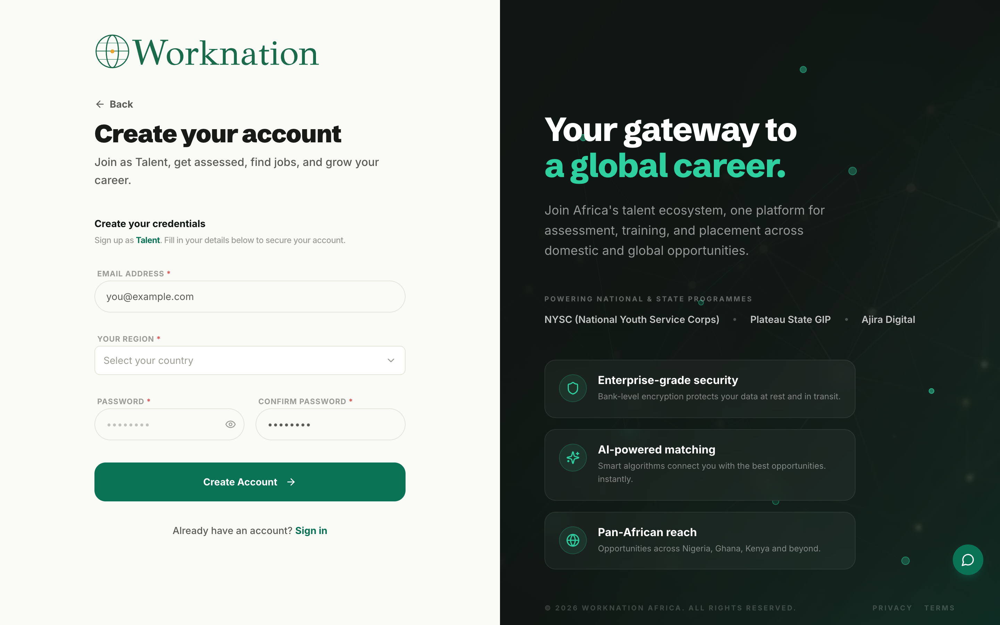
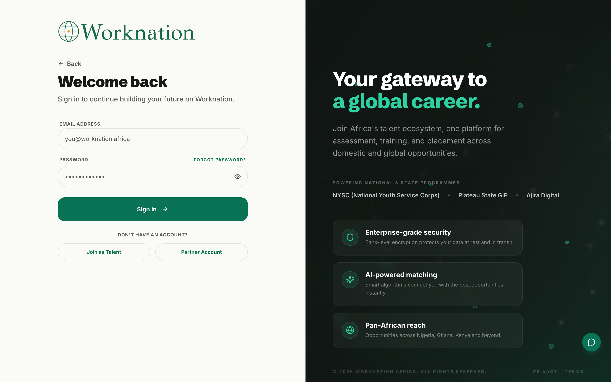

Africa's Verified Talent Ecosystem & Career Infrastructure
Visit Live Site (worknation.africa) ↗
Africa boasts the world's fastest-growing digital workforce, yet skilled African tech, data, and design professionals encounter substantial hurdles proving verified competence to overseas employers. WorkNation was engineered to dismantle this barrier through verifiable skill credentials, assessments, and AI talent pipelines.
The platform serves two primary sides: candidates needing an empowering career roadmap with progressive skill badges, and corporate recruiters needing rapid, verified candidate matching with zero credential fraud.
Leading the design at Outsource Global (May 2022 – December 2025), Emmanuel crafted an end-to-end design system spanning applicant onboarding, interactive assessment modules, and an enterprise talent search dashboard with high-fidelity candidate preview cards and instant interview scheduling.
While Africa produces over 100,000 engineering and digital professionals annually, less than 6% secure cross-border remote employment. International hiring managers struggle to verify educational and technical credentials from emerging markets, while African talent faces crippling drop-off rates on cumbersome, data-heavy candidate portals.
Global enterprise recruiters discard international African resumes in under 6 seconds due to lack of recognized institution accreditation, unverified GitHub claims, and widespread credential forgery.
Legacy desktop application forms required submitting 40+ fields with heavy resume uploads on low-bandwidth 3G mobile networks, causing over 65% of qualified applicants to abandon mid-funnel.
Candidates were forced to complete repetitive, 2-hour generic coding quizzes for every company, which recruiters still questioned due to lack of tamper-proof proctoring and code plagiarism checks.
Hiring teams wasted up to 30 hours per engineering hire manually screening thousands of noisy applications without verified domain competency benchmarks or match scoring.
To understand the systemic friction between African software engineers and international hiring pipelines, we conducted a 6-week mixed-methods research study across Lagos, Nairobi, London, and Berlin.
We synthesized our qualitative findings into two focal archetypes: a determined African developer seeking verified recognition, and an international recruiter demanding friction-free vetting.
“I have shipped production code for African scale, but foreign recruiters reject my CV without even reviewing my GitHub because they don't know my university.”
“We urgently need senior React and Python talent in CET timezone, but our ATS receives 2,000 resumes a week. I need pre-vetted candidates with certified test scores.”
We reimagined the fragmented talent lifecycle into a cohesive, high-trust corridor connecting initial mobile onboarding with verified international hiring.
Talent registers with single sign-on (GitHub/LinkedIn), chooses target role track, and completes an initial 3-minute profile wizard with offline auto-save.
Candidates enter an interactive browser IDE to solve real-world coding challenges with anti-cheat monitoring and automated test suite scoring.
Upon passing, candidate is awarded a tamper-proof digital competency badge linked to their public WorkNation profile and shareable verification URL.
Enterprise hiring managers discover certified talent via algorithmic match ranking, preview verified credentials, and trigger direct interview scheduling.
We organized the WorkNation ecosystem into five structured operational domains, bridging talent career development with enterprise hiring speed.
Public discovery surface highlighting verified career tracks, benchmark guides, and open opportunities.
Empowering applicant workspace for skill testing, profile curation, and interview pipeline tracking.
High-throughput hiring cockpit for international engineering directors and talent acquisition teams.
Rigorous, anti-cheat testing infrastructure verifying real-world code and domain competency.
Administrative hub managing institutional partnerships, assessment validity, and placement compliance.
Solving the African credential paradox required deliberate architectural trade-offs: balancing high-rigor skill verification with ultra-lightweight mobile interactions.
To overcome 65% drop-offs on metered 3G mobile networks, we dismantled monolithic desktop forms into an ultra-lean 3-step progressive onboarding funnel. We implemented client-side state preservation with IndexedDB, asynchronous image compression, and zero heavy third-party tracking scripts, reducing page payload from 4.2MB to 120KB and eliminating mid-funnel network loss.
To establish indisputable credential trust with foreign employers, we engineered an in-browser code execution sandbox powered by Monaco Editor. The system delivers randomized algorithmic problem variants, executes automated unit test assertions in real time, and logs behavioral anti-cheat signals (focus loss, clipboard copy/paste, submission timing) to ensure 100% genuine candidate competency.
Instead of unverified resume claims, we created cryptographic digital badges linked to immutable verification URLs. Each badge encodes candidate test percentiles, completion timestamps, and verified competencies. Recruiters and ATS platforms can authenticate candidate credentials with a single click or API call, eliminating resume fraud and credential skepticism.
Recruiters cannot spend 10 minutes per applicant. We designed a high-velocity candidate triage cockpit featuring interactive preview cards with match percentages, verified skill badges, and timezone overlap tags. Clicking any card opens a split-screen drawer displaying code submission diffs, portfolio highlights, and 1-click interview scheduling without ever leaving the search view.
By dismantling credential skepticism and engineering a seamless, mobile-first verification corridor, WorkNation opened unprecedented international career mobility for African digital professionals.


"Emmanuel Brendan redesigned our main landing page and within two weeks we were seeing more qualified enquiries"
"Working with Emmanuel was a game changer. The conversion rate on our supplement store went up 40% in the first month."
"The attention to detail and strategic thinking Emmanuel brings to every project is unmatched. Our sign-up rate doubled."
Tell me about your business and what's not working I'll tell you if and how I can help.
I reply within 24 hours. If your project is urgent, use the Book a Call button to find a time directly.